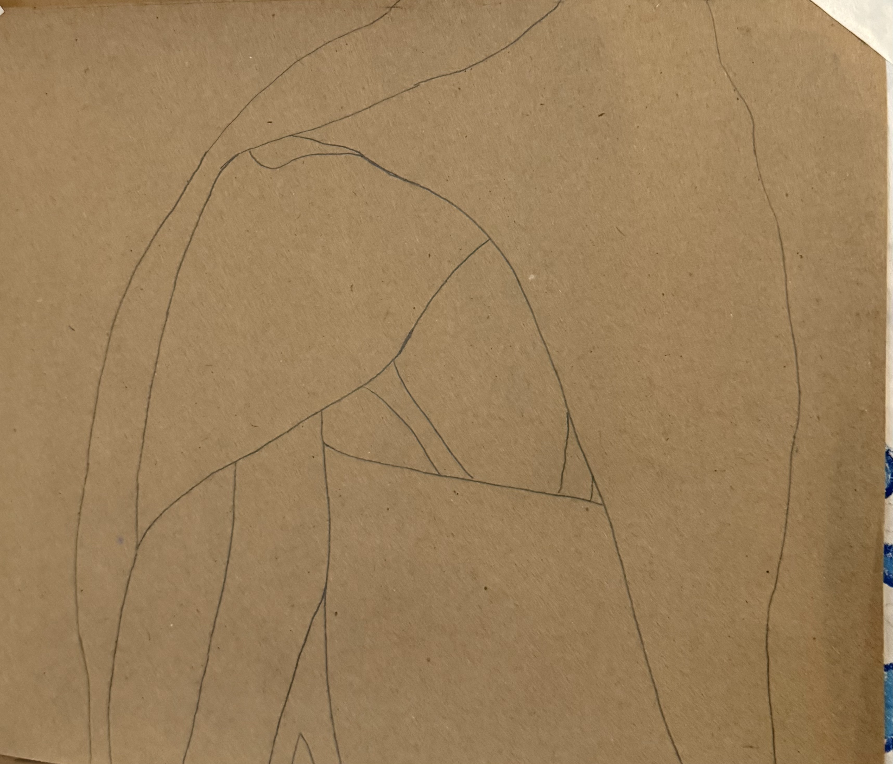
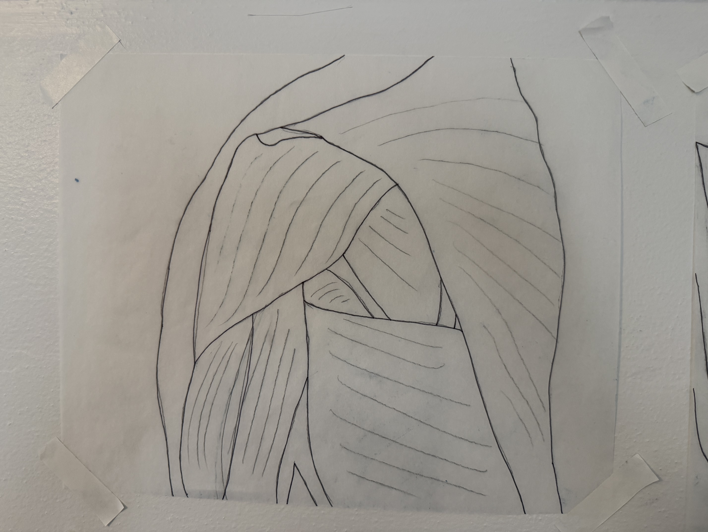

Paper
Process fragment
Textured paper surfaces and material explorations. The paper itself becomes part of the artwork, contributing texture and tone.
Study Collection

Paper Study 01: Craft Paper

Paper Study 02: Stonehenge Paper

Paper Study 03: Strathmore Paper

Paper Study 04: Sketch Paper

Paper Studu 05: Translucent Paper